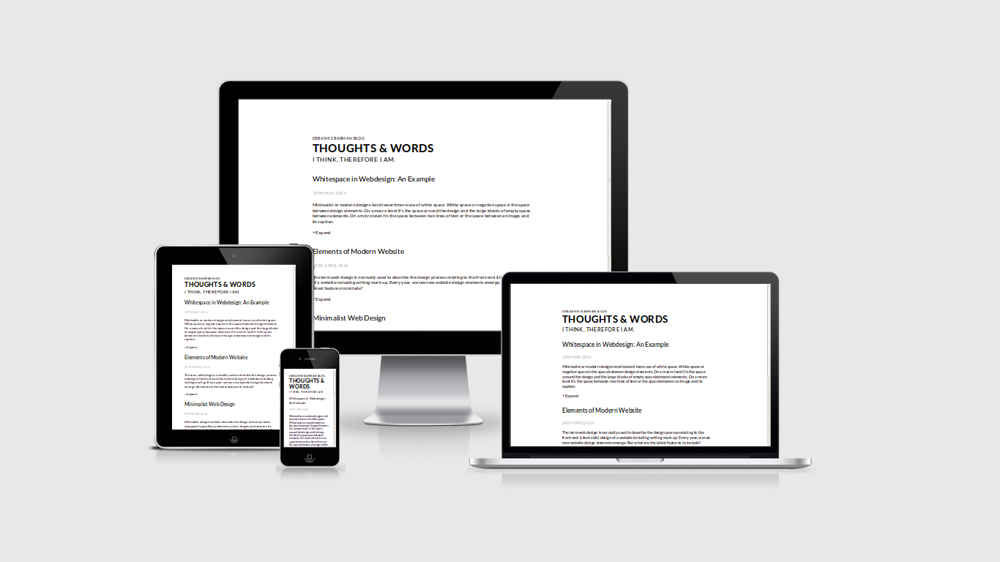
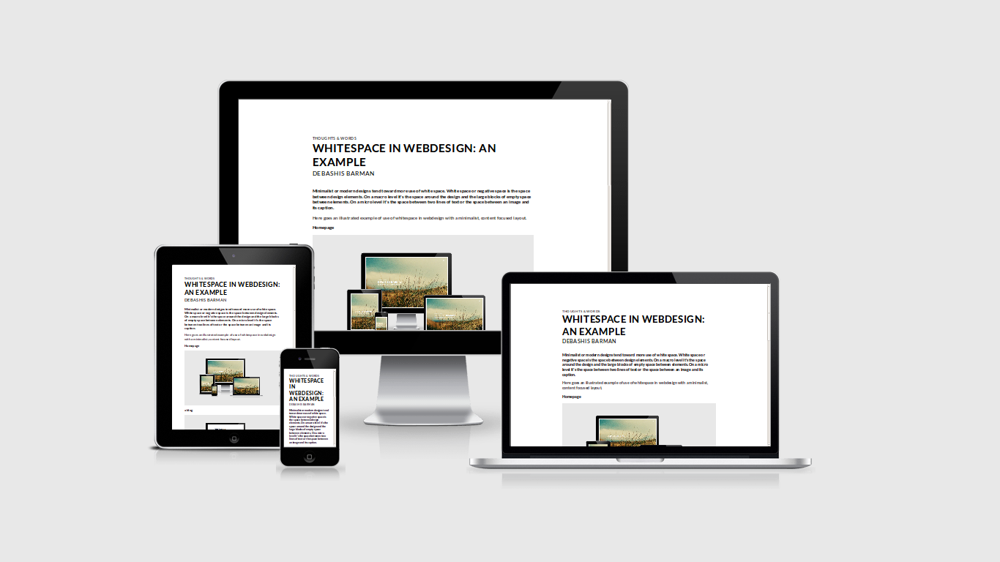

Minimalist or modern designs tend toward more use of white space. White space or negative space is the space between design elements. On a macro level it’s the space around the design and the large blocks of empty space between elements. On a micro level it’s the space between two lines of text or the space between an image and its caption.
Here goes an illustrated example of use of whitespace in webdesign with a minimalist, content focused layout.
Homepage

A blog 
and a post 